2600
| Monodrone | Duodrone | Tridrone | Quadrone | Pentadrone | Decaton | Nonaton | Octon | |
|---|---|---|---|---|---|---|---|---|
| Frequency: | Common | Common | Uncommon | Uncommon | Rare | Rare | Rare | Rare |
| Intelligence: | Semi (2-4) | Low (5-7) | Average (8-10) | Very (11-12) | Very (11-12) | High (13-14) | High (13-14) | Exceptional (15-16) |
| No. Appearing: | 12d12 | 1d12 | 1d4 | 1d4 | 1 | 1 (of 100) | 1 (of 81) | 1 (of 64) |
| Armor Class: | 7 | 6 | 5 | 4 | 3 | 2 | 0 | 1 |
| Movement: | 6, Fl 18 (D) | 9, Fl 9 (E) | 12 | 15, Fl 15 (D) | 18 | 15, Fl 3 (E) | 18 | 9, Fl 9 (B) |
| Hit Dice: | 1+1 or 1-1 | 2+2 | 3+3 | 4+4 | 5+5 | 10+10 | 11+11 | 12+12 |
| THAC0: | 19 or 20 | 19 | 17 | 17 | 15 | 11 | 9 | 9 |
| No. of Attacks: | 1 or nil | 2 | 3 | 4 or 2 | 5 | 10 | 9 | 8 |
| Damage/Attack: | 1d4 or weapon | 1d4+1 (×2) or weapon | 1d4+2 (×3) | 1d4+3 (×4), 1d5+5 (×5), or weapon | 1d4+4 (×5) | 1d4 (×10) | 1d6 (×9( | 1d8 (×8) |
| Special Attacks: | Nil | Nil | Nil | Attacks as if 8 HD | Paralysis gas | Spells | Spells | See below |
| Magic Resistance: | Nil | Nil | Nil | Nil | Nil | 10% | 20% | 30% |
| Size: | S | S | M | M | M | M | L | L |
| XP Value: | 1-1 HD: 35 1+1 HD:120 | 175 | 270 | 650 | 2,000 | 9,000 | 10,000 | 12,000 |
| Septon | Hexton | Quinton | Quarton | Tertian | Secundus | Primus | |
|---|---|---|---|---|---|---|---|
| Frequency: | Very rare | Very rare | Very rare | Very rare | Very rare | Very rare | Unique |
| Intelligence: | Exceptional (15-16) | Genius (17-18) | Genius (17-18) | Supra (19-20) | Supra (19-20) | Godlike (21+) | Godlike (21+) |
| No. Appearing: | 1 (of 49) | 1 (of 36) | 1 (of 25) | 1 (of 16) | 1 (of 9) | 1 (of 4) | 1 |
| Armor Class: | -1 | -2 | -3 | -4 | -5 | -6 | -10 |
| Movement: | 9 | 12, Fl 12 (C) | 6, Fl 6 (C) | 12, Fl 24 (B) | 12 | 18, Fl 18 (B) | 24, Fl 24 (A) |
| Hit Dice: | 13+13 | 14+14 | 15+15 | 16+16 | 17+17 | 18+18 | 220 hp |
| THAC0: | 7 | 7 | 5 | 5 | 3 | 3 | 1 |
| No. of Attacks: | 7 | 6 | 5 | 4 | 3 | 2 | 1 |
| Damage/Attack: | 1d10 (×7) | 1d12 (×6) | 2d8+1 (×5) | 2d12+2 (×4) | 5d8 (×3) | 6d12 (×2) | 20d8 + special |
| Special Attacks: | See below | See below | See below | See below | See below | See below | See below |
| Magic Resistance: | 40% | 50% | 60% | 70% | 80% | 90% | 100% |
| Size: | M | L | L | L | L | L | L |
| XP Value: | 13,000 | 14,000 | 15,000 | 16,000 | 18,000 | 19,000 | 36,000 |
| Climate/Terrain: | Mechanus |
|---|---|
| Organization: | Hierarchy |
| Activity Cycle: | Any |
| Diet: | Special |
| Treasure: | Nil |
| Alignment: | Lawful Neutral |
| Special Defenses: | See below |
| Morale: | Fearless (20) |
What’s a mortal to make of the modrons, those strange creatures of absolute order who whir and click on the plane of Mechanus? Theirs are not like other lives — even the infinitely subtle baatezu are more comprehensible than these thronging drones. To an outsider it appears the modrons have no existence other than as a whole. Indeed, there is a saying: “To look at one modron is to look at all of them.”
It is only logical, as it is with all things modron, that they are native to the orderly plane of Mechanus. The two, plane and modrons, probably would not exist without each other - modron society defines the plane, just as the plane shapes them. To understand the modrons, a being must stop thinking like a person, like an individual. Only then can anyone hope to comprehend the patterns of modron life.
Modrons are strictly divided into fourteen castes. Castes are hardly unique, but the modron approach to them is. Not only does each rank have its own functions, but each also has its own body shape, so the rank of any modron can be readily identified by the creature’s appearance.
Ruling over the castes is Primus, the One and the Prime. It and the plane are one in thought and deed; as Primus turns, so do the wheels of Mechanus.
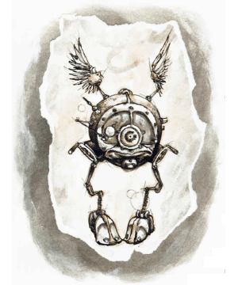Combat, General: Regardless of rank, all modrons possess certain abilities and immunities, but because of rank, certain modrons — the hierarchs — possess additional abilities. Whether any of these immunities and powers exist as properties of their race or from association with the plane of Mechanus, no one knows. Most scholars think these powers are natural to the race, as none are lost by modrons operating off the plane of Mechanus.
All modrons are unaffected by any illusions or magic that affects the mind, such as beguilement, charm, domination, hold, hypnosis, and sleep. Fear and other emotion spells are similarly ineffective against a modron, as are attacks drawing upon the Positive and Negative Energy Planes (including life-draining powers). All modrons save vs. cold, fire, and acid attacks with a +1 bonus, and they suffer damage from such attacks with a -1 modifier per die.
Modron hierarchs are never surprised, and their precision of order always allows them to determine their specific place in the initiative sequence of all attack rounds. Thus, they never roll for initiative, and the DM chooses when they will act. Typically, this comes at the most effective moment, just before the swordsman’s blade arcs through the air or the wizard utters the final word of a spell, and so on. The elite modrons also can perform the following spell-like abilities, once per round, at will: clairaudience, clairvoyance, command, dimension door, teleport without error, and wall of force. They also are capable of traveling on the Astral and Ethereal Planes, but will never do so unless ordered by Primus.
All hierarchs can communicate telepathically, and the range of this power is as follows:
| Rank | Miles |
|---|---|
| Decaton | 44 |
| Nonaton | 63 |
| Octon | 80 |
| Septon | 190 |
| Hexton | 216 |
| Quinton | 238 |
| Quarton | 384 |
| Tertian | 405 |
| Secundi | 420 |
| Primus | All Mechanus |
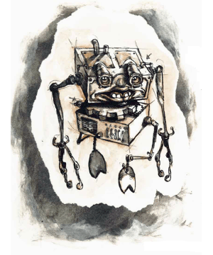Habitat/Society: To understand modron society, one must abandon all understanding of the self. In such forgetting comes knowledge, so with the surrender victory is gained. Should the scholar retain the slightest glimmer of who he is, his words are tainted and his observations lies. It is said that those able to strip their souls so bare become modrons, themselves, and their spirits become different from their shells.
It is a fundamental property of the modrons that each rank can only comprehend the existence of the rank directly above and below it. For example, the monodrones obey the will of the duodrones, but they cannot even conceive of the existence of the tridrones. When a monodrone sees a tridrone, it does not see a modron, and it could not even say what it sees. Some aphasia apparently breaks the link between the sight of the higher modron and what it actually is. This blindness leads to an interesting conclusion, as each rank believes that those immediately above it are the highest form of life and the fountainhead of supreme logic. Thus, Primus’s lordship is secret from all modrons but the four secundi, who pass his edicts on to the nine tertians, who in turn pass these to the quartons (who have no knowledge or understanding of either the secundi or Primus), and so on.
There is an awareness of all ranks below a modron’s station, yet communication is exclusively limited to adjacent ranks. It would seem that the monodrone is almost as alien to the tridrone as the tridrone is to the monodrone. This is not the result of elitism. Rather, the strict order observed by the race completely negates the slightest necessity for communication beyond immediate inferiors and superiors.
A modron’s perception of its immediate superiors should not be mistaken for deification, either. What others might call a god, the modrons cannot imagine, for they are unable to conceive of such an individual existence. Instead, all life and direction spring from a pool of logical action — all that is right happens because it must inescapably be, and all that is wrong is that which must not be. These metal limitations make dealings with modrons a challenge. Within each rank there is no individuality, either in form or thought. All modrons call themselves “we”, and a character has no way of knowing if the pentadrone he spoke to today is the same as the one who held the same post yesterday. This would be minor if the modrons weren’t so bureaucratically driven, requiring strangers to appear and reappear before clerks, courts, and boards. Some travelers solve the problem with a brush and paint, marking modrons with runes simply to tell them apart. Unless instructed to remove these marks, a modron may wear a splash of color or a strange sigil for the rest of its life, for they don’t seem to notice the markings themselves.
Even the size of modron society is rigidly fixed. In each rank there are only a set number of modrons. Should a modron of any rank die, an available candidate from the next lowest rank is promoted, and then the gap in the lower rank is filled by promoting from the still lower rank. This continues until the rank of monodrone is reached. With no lower ranks, the creatures at this level reproduce by fission, as one of their members mysteriously divides into two. (Given this, the claim that all modrons are one might be truer than it first seems.)
Promotion occurs seemingly by accident. As soon as a vacancy occurs, the nearest modron of the next lowest rank is recruited to ascend. Since they have no individuality, there’s no point in trying to promote the “best and the brightest”; all modrons of a given rank are deemed equal. Promotion is traumatic — not only does the chosen modron undergo a wrenching change of shape to the new rank’s form, but it suddenly gains an understanding of a world previously veiled to it: the existence of a yet superior rank. Imagine the shock of a duodrone, who knew only of monodrones, duodrones, and tridrones, when it suddenly discovers those inexplicable creatures around it are quadrones and members of its own race! On the other hand, the newly promoted modron seems to adapt to its new form instantly, and it is the humanoid observer who is often most shaken by the experience.
From greatest to least, the castes of the modrons are listed below. Numbers are not given for the modrons, since no scholar has yet produced the definitive organization chart of these creatures. After each name is a brief description of that rank‘s duties in their realm of Mechanus.
Primus: Absolute ruler of all modrons
The realm of the modrons occupies 64 of Mechanus’s coglike wheels, called sectors, and each is governed by an octon. The sectors in turn are grouped into four sector regions, overseen by the 16 quartons, and each group of four regions, called quarters, is supervised by one of the four secundi. And, of course, all of it is ruled by Primus.
Born through parthenogenesis, modrons have no family, tribe, or clan. Instead they live in rigid numerical units called, for lack of a better word, battalions. This makes them sound more warlike than they really are, although modrons have standing armies that are not to be trifled with.
Although some less-informed scholars state that no modron acts except by the orders of a superior, this is not perfectly accurate. In general, a modron can act and react to a situation on its own, provided the situation falls within the range of its purpose. Thus, monodrones, who can only fulfill a single task at any given time, are rightly seen as incapable of reacting. As one moves higher through the ranks, the range of choices and reactions available to any given modron increases. Even so, modrons are notorious for their predictable and rigid reactions to events.
It should be no surprise that the goal and purpose of every modron is to organize Mechanus in the most orderly fashion possible, but their goal is not limited to only their 64 wheels or even Mechanus itself. Given the opportunity, they would spread their rigid pattern of organization over the entire multiverse. Fortunately for the rest of the planes, order is constantly challenged by chaos, even in the clockwork vastness of Mechanus. Since even the slightest imperfection to order is enough to disturn the harmony modrons ask, they seldom find the time or resources to carry their crusade to other realms or planes.
Modrones speak their own precise, mathematical language, but those of duodrone or greater can manage at least some of the trade tongue found throughout the planes.
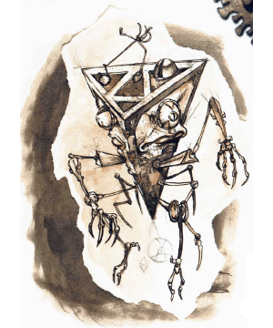Ecology: Modrons fulfill many roles within Mechanus. They maintain parts of the sphere and are maintained by it. They make war with their enemies and trade with their neighbors. Together, they are one living social entity. Those few that venture outside their plane (on orders from their superiors) will always attempt to bring order out of chaos, sense out of nonsense.
Modrons are not completely without their uses to the rest of the multiverse. Their single-minded pursuit of order has a certain usefulness in some fields. On rare occasions, nonmodrons can hire members of this race for particular tasks. The process is never simple, since the potential employee can never make the decision itself — all requests must be approved by its superiors. Usually the request has to pass through several ranks before an answer is given.
If permission is granted, some wizards find modrons to be amazingly useful as librarians, and merchants may retain them as bookkeepers, although such modrons must always be watched for overzealousness. Sometimes their understanding of order, far deeper than that of most other beings, defies human understanding. In one library, all the books might be arranged by subject, in another by the first letter of the first word, and in yet a third by the page where the last diagram appears. All three might be vital keys in the overall order of the modron universe. Order, after all, does not necessarily need to be understandable.
The bodies of modrons slain anywhere immediately disintegrate. It is suspected that whatever energies were trapped within the creature’s mortal form find their way back to Mechanus and merge with the energy field of the plane. This field is what sustains the modron race. Although modrons eat physical food, it is not the substance that sustains them, but the energy essence contained therein. So long as the modrons are able to draw upon this essence, they can continue to split and perpetuate their kind. In fact, it is speculated that the only means to truly crush this race is to cut it off from this energy pool. Given the impossibility of this feat, it is fortunate that modrons are not a particularly aggressive race. Who, after all, could withstand a single-minded army that constantly regenerated itself?
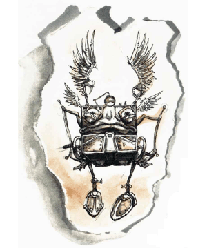Monodrone (Base Modron): These creatures make up the bulk of Mechanus’s population. They are small spheres with a single eye, wings, and two arm/legs. Monodrones are single-function modrons, assigned to simple labor or service in the regiments of the modron army. Thousands of the spherical monodrones, armed with spears, fouchards, and crossbows are impressive when marshaled against a foe with their unswerving, single-minded performance. They exist only for their work.
Monodrones are barely intelligent. They are unable to speak or read, but can understand commands spoken in the tongue of their race (although they will heed only a duodrone). Monodrones are capable of just one action at a time. Tell them to attack and they do so until slain, even if that means attacking each other after the enemy has been obliterated. Order them to guard and they guard without food or sleep. It is fortunate that they feed on the very substance of air around them; otherwise, it would be necessary to order them to eat every day.
Duodrone (Base Modron): Duodrones are bifunctional modrons that supervise 12 units of monodrones or perform complex tasks beyond the abilities of the monodrones. They are blocky, rectangular creatures of great strength. Like all modrons, they are absolutely loyal to the commands of their immediate superiors.
Capable of interpreting two commands at once, duodrones serve in the forces of the modron army as corporals and sergeants, or as special shock troops armed with thrusting and crushing weapons. Typically, they are given only a single command at a time, allowing them the limited ability to react. If ordered to attack, for example, they will do so until the enemy is slain and then seek out a new enemy, rather than attacking each other. Duodrones have limited conversational ability, but they can report their operations and observations clearly and completely. Duodrones have 90-foot infravision.
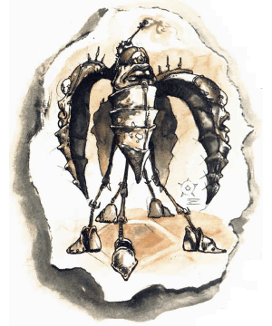Tridrone (Base Modron): Tridrones appear as three-sided pyramids with spidery arms and legs. They supervise squads of 12 duodrones, who in turn pass their orders to the monodrones. Tridrones can carry out multiple-task projects on their own. Typically, they receive a general order, which they divide into smaller tasks to be fulfilled by the duodrones. In the modron army, tridrones serve in special companies, equipped with three javelins per being, which they hurl before entering melee.
Tridrones are capable of reporting actions and observations and actually planning limited objectives on the battlefield. They speak their own language and the trade tongue of the multiverse.
Quadrone (Base Modron): The cubic quadrones comprise the upper level of worker modrons. They serve as field officers, and each battalion has a special “dozen-unit”, containing nothing but quadrone warriors. With their four arms, they are capable of wielding two bows at the same time. Some quadrones are winged (the wings replace one set of arms and negate the use of one bow) which are used for special missions or for aerial combat. As four-function creatures, quadrones can report actions and observations, make plans, react to unexpected occurrences, and act to remedy them.
All quadrones have senses equal to 150% of normal human standards. They enjoy 180-foot-range infravision. Equipped with sensory organs on all six sides of their cubic bodies, quadrones are never surprised under normal circumstances.
Pentadrone (Base Modron): The highest of base modrons, pentadrones serve as the police of the base population and as intermediaries between the base modrons and the godlike (in their view) decaton hierarchs. The pentadrones receive instructions passed down by the rules of Mechanus and see that they are implemented by the quadrones, policing them as necessary.
As five-function beings, these creatures can communicate, operate, monitor, plan, and manage. They can also react to unplanned situations. In the armies of the modrons, a dozen of them are always assigned to each regimental headquarters as an elite unit, while others actually command the regiment.
These five-armed creatures resemble starfish on thin, stiltlike legs. In addition to powerful arm attacks and an effective 18/00 Strength score, pentadrones have a paralysis gas which they emit in a stream 2 feet in diameter and 5 feet in length. Any creature caught within this stream must successfully save vs. paralysis or remain immobile for five rounds. Pentadrones can use this gas stream no more than once every five turns, with a maximum of five uses per day. Alternately, the pentadrones can use this gas to levitate (as 5th-level wizards).
Pentadrones can survive virtually any environment, withstanding temperature extremes from 210 degrees to -100°F without discomfort. Cold, fire, and acid attacks receive a -2 modifier per die of damage. They are immune to illusion and mind-affecting magic, and only weapons of +1 or better enchantment will harm them.
Pentadrones have double human senses and double normal infravision (180-foot-range).
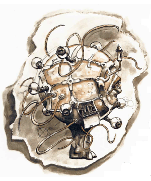Decaton (Hierarch Modron): The decatons are the lowest order of officials found in modron society. These creatures appeare as 10-tentacled sphered on stumpy legs. The are the overseers of the physical welfare of the base modrons, the voice of the great power to the working class. One decaton is assigned to each sector of the realm. while the remaining 36 serve on the staffs of the 36 legions of the modron army.
Decatons have spell ability equal to that of a 10th-level cleric, but they lack the ability to turn undead. They also have the following spell-like powers, which apply only to other modrons: cure 1 point of damage for all modrons within 144 feet, cure disease in a 12 foot radius, heal by touch up to 10 modrons per round, and remove paralysis by touch for up to 10 modrons per round. These powers are usable one at a time, at will, once per round. Curiously (as are most things modron), the powers affect all modrons whether the decaton recognizes the rank or not.
The spherical decatons fly by generating a light gas within their bodies, rendering them lighter than air. Generally they only rise into the air in order to get an overview of the situation when commanding modron armies.
Nonaton (Hierarch Modron): There are at least 81 nonaton posts identified in modron society, and there may be more. These cylindrical modrons act as commissars and chief inspectors of the modron universe. Nine nonatons carry the orders of the octons, 64 regulate the actions of the decatons on the 64 wheels of the realm, and eight monitor the loyalties of the decatons of the army. Each nonaton has ten decaton lieutenants, who in turn have five pentatons to serve them.
Nonatons have the spell powers of 11th-level clerics, plus the following spell-like abilities, usable at will, once per round: ESP, mirror image, slow, web, detect good/evil, detect lie, and detect charm. They may use power word, stun once per day.
Nonatons usually head investigations of rogue modron units and handle small-party invasions from other planes. In the latter case, they first attempt to detect the invaders’ intentions, then act accordingly.
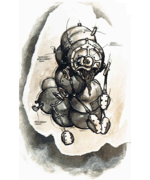Octon (Hierarch Modron): There are at least 64 octons, one in charge of each sector of the plane in the modron realm. These creatures govern the wheels and can command any armies stationed there. The lesser modrons of each cogwheel are considered wards of the octons, who guard their sectors quite rigidly and see that regulations are obeyed, routine is observed, and reports are invariably correct.
An octon moves through air and water by means of a circular collar at shoulder level which is part of the octon’s body. It forces air or liquid through the collar, giving the creature lift, propulsion, and a high amount of maneuverability. Eight tentacle-arms are attached to the outside of this collar.
Octons use spells as 12th-level clerics. They can also employ the following spell-like abilities at will, once per round, one at a time: water walking (as the ring of that name), haste, detect good/evil, and telekinesis (3,500-gp-weight maximum). They are immune to psionics.
Each octon has a personal staff of one nonaton, who in turn commands one decaton, who controls five pentadrones, then 16 quadrones, 81 tridrones, 256 duodrones, and 1,728 monodrones through the chain of command. These forces maintain towers which are smaller versions of the towers of the quartons, the secundi, and Primus, although they do not understand who built those structures.
Septon (Hierarch Modron): Septons are officials who maintain order and see that all regulations have been obeyed. Seven of them serve each hexton assigned to the quintons. The septons travel from place to place as inspectors and examiners of work and records, and they are charged with transferral of information from outlying areas to the towers of the regions, quarters, and the capitol tower itself.
Septons appear as humanoids with large bald heads. They have shoulder collars similar to those of octons, although they are smaller and, while insufficient to propel them through the air, they provide excellent transport underwater.
In order to assure the proper performance of their duties, each septon has seven senses which operate continuously: hearing, sight, smell, taste, touch, ESP (30-foot range), and detect magic. They also are powerful spellcasters, having the abilities of a 13th-level priest and a 12th-level wizard.
Septons, as with all hierarchs that do not have psionic ability, are completely immune to psionic attacks and combat.
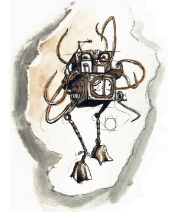Hexton (Hierarch Modron): The hextons fulfill several roles in modron life. First, they are the generals of the 36 modron armies. Second, six are attached to each of the wheels of the realm, where they maintain the chain of command in modron life. Another six serve at the tower of Primus, although they are not aware of his existence. There are undoubtedly more hextons, although no one has ever logged all their posts.
Hextons appear as humanoids with six arms — two large human arms with six fingers and four tentacles tipped with sharp claws below. They have thin, fanlike folded wings, joined at the shoulders.
Hextons use spells as 14th-level priests, but they have no special spell-like abilities other than those noted for all hierarch modrons. They are immune to all psionic attacks.
There is a 75% chance that any hexton will be accompanied by its personal guard: a staff of one septon, two octons, three nonatons, five decatons, and 25 pentadrones, all fanatic in their dedication to their orders.
Quinton (Hierarch Modron): Quintons are the major bureau chiefs and records keepers of Mechanus. Each has a sexton assistant, seven septons, and one octon as its staff. There are bureaus in each of the sectors and quarter towers, five main bureaus in Primus’s tower at the capitol, and each of these bureaus is headed by a quinton.
Quintons look like tall, stocky humanoids with four flexible arms jutting out from the shoulders. Prehensile tails serve as the creatures’ fifth arms. They have fanlike wings similar to those of the hextons. As a symbol of rank, the quintons have a diamond inscribed in their foreheads.
Quintons are capable of casting legend lore as if the questioned object or person were at hand (1d4 rounds). They may detect good/evil at will and may cast spells as 15th-level priests.
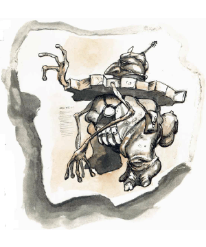Quarton (Hierarch Modron): Quartons administer the 16 sectors of the modron realm and oversee the operation of the bureau, sector governors, and army units attached to their regions. Each quarton has a personal staff of those hierarchs assigned to his command, plus 36 pentadrones that act as a guard unit. (These pentadrones can only be told to guard the object resembling the quarton, without ever understanding its role or purpose in their lives.)
Quartons are 12-foot-tall humanoids with four jointed arms and fanlike wings. They cast spells as 16th-level priests.
Tertian (Hierarch Modron): Trial, judgement and sentencing of all creatures in the modron realm is the province of the nine tertians. They supervise the quartons and hear all crimes brought against the rigid orthodoxy of the realm. For the bulk of the modron population, the tertians are alien and unfamiliar, the ultimate impartial judges. If presented with a case against a duodrone, the base modron can only imagine (if it can imagine at all) the tertian to be some incomprehensible manifestation of the supreme logic — a “super-tridrone” so to speak.
Most judgments deal with modron rogues, i.e., any modron who strays from the proper order. In addition, the tertians pass on the orders of the secundi, to whom they all report.
Tertians look fairly human, except for their 12-foot height, the horns jutting from the sides of their bald heads, and their long prehensile tails that end in a macelike ball. Anyone struck by this ball must successfully save vs. paralysis with a -4 penalty to the roll or fall paralyzed until the tertian releases them. In addition, tertians may cast spells as 17th-level priests and 20th-level wizards. As with other hierarchs, they cannot use psionics, b e also immune to them.
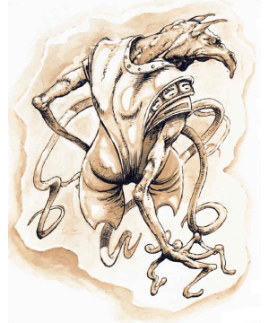Secundus (Hierarch Modron): The four secundi, viceroys of the quarters, are the virtual rulers of Mechanus, reporting only to Primus. Each secundus has a staff of two tertians, who in turn command other heirarchs.
The secundi appear as incredibly thin and tall humanoids with long, narrow faces and deep-set eyes. They cast spells as 18th-level priests and 20th-level wizards. If a secundus’s attack roll exceeds the number needed to hit by 5 or more, the victim is stunned until the secundus releases him, unless the victim is of demigod or higher status.
The secundi live in great towered cities near the centers of their quarters. They always live in harmony with one another, except during those extremely rare times when a new Primus must be chosen (see below).
Primus (The One and the Prime): Primus is the ruler of all the modron realm. It and it alone understands the whole structure of the modron race, since it sits at its pinnacle. From there it decrees what is order, writes the laws, and establishes the rules and regulations. All other modrons exist to carry out the plans and obey the rules of Primus. Failure to meet this powerful creature’s standards will result in a modron being declared rogue and sentenced accordingly.
Primus is a huge being who rises from an energy pool in the central part of its great tower at the center of the plane (although Primus also may appear as a normal androgynous human). In giant form Primus’s hands are unseen, for the right one is swathed in bright rainbow hues and the left is covered with inky dark clouds.
Within Mechanus, Primus has the status of a greater power, except it is possible for Primus to die, albeit only under near-impossible conditions. Its sole concern is for the modrons. It does not send avatars to other planes or even take part in the normal bickering and wars of the planar powers. All modrons with priestly powers gain their spells directly from it.
The death of Primus does not break the link in modron society, for like all gaps, the vacancy is filled by promotion of the one of the secundi. However, the process usually creates turmoil since, without a Primus, chaos is allowed to enter into the perfection of modron society. Some scholars have mistakenly interpreted this chaos as civil war within this orderly race. The first act of the new Primus is to return order to its race, a process which can take some time.
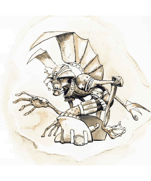Even in the perfect modron world there is disorder, and sometimes this disorder strikes at the very fabric of the modron society. When this happens, a modron may go rogue. This is most common in the base modrons, although there are cases of a few hierarchs being affected this way (but certainly never any hierarch of quarton status or higher!). Rogue moderns do not act in accordance with Primus’s wishes and directives, but break laws, disobey orders, and sometime become violent. These rogues are hunted down, usually by the pentadrones under the command of the nonatons.
Once captured, the rogue is tried and sentenced according to the laws of Primus. For a lowly base modron, this is a bewildering series of events, as strange beings (hierarch modrons) describe the crimes committed and the punishment that is due. It can only seem like the judgment of angels upon a hapless mortal, and many sages would dearly love to know just what modron theology makes of the whole thing.
There are 36 great armies in the realm of the modrons, each a powerful fighting force. Each of the 16 regions of the plane has its own army, and the secundi have two armies each, in addition to their regional forces. The tertians have three to aid in law enforcement and punishment. The final nine armies are stationed outside of Primus’s tower and serve as a reserve force, should they be needed.
Each army is commanded by a sexton and is comprised of four corps. Each corps is led by 40 pentadrones in a telepathic hook-up with the hexton general. Each corps has two divisions commanded by 20 pentadrones, and each division has four brigades led by 10 pentadrones. Each brigade has four regiments, each one being the standard tactical unit, led by five pentadrones. There are 70 officers, 192 NCOs, 252 messengers, and 2,628 line troops in a brigade, for a total of 3,142.
A regiment consists of two “battles” plus a squad of winged monodrone messengers and a special squad of 12 pentadrones. Each battle is led by four quadrones and consists of six companies of monodrones, two companies of duodrones, a special company or tridrones, a squad of quadrants, and another squad of messengers. The eight regular companies are each divided into two wings plus a headquarters unit. Each company consists of 12 squads and three officers. A squad numbers 12 troops and will contain an NCO of the same type as the troops. Special units of messengers, “shock troops” and the like may be attached to the headquarters’ units of brigades, divisions, and corps.
◆ 1292 ◆